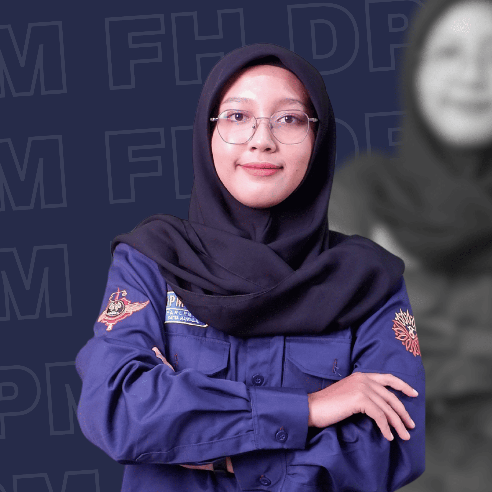

Tentang BPH
Badan Pengurus Harian merupakan unsur pimpinan dan pelaksana utama dalam menjalankan fungsi internal DPM FH UNNES.
Koordinasi
BPH berperan dalam mengoordinasikan pelaksanaan tugas dan fungsi kelembagaan DPM FH UNNES.
Organisasi
BPH memastikan organisasi berjalan secara terarah, terstruktur, dan sesuai dengan tujuan kelembagaan.
Representasi
BPH menjadi bagian penting dalam menjalankan representasi kelembagaan DPM FH UNNES.
Struktur Organisasi
Badan Pengurus Harian

Ahmad Zaki Mubarok
Ketua Dewan Perwakilan Mahasiswa Fakultas Hukum Universitas Negeri Semarang.

Lubas Adam Istawi
Wakil Ketua Dewan Perwakilan Mahasiswa Fakultas Hukum Universitas Negeri Semarang.

Miguel Torang Panganju Gultom
Sekretaris Dewan Perwakilan Mahasiswa Fakultas Hukum Universitas Negeri Semarang.

Naura Nashtia Khansa
Bendahara Dewan Perwakilan Mahasiswa Fakultas Hukum Universitas Negeri Semarang.

Siti Arofah Wiryo
Koordinator Komisi Dewan Perwakilan Mahasiswa Fakultas Hukum Universitas Negeri Semarang.

Ananda Viola Maharani
Anggota Badan Pengurus Harian Dewan Perwakilan Mahasiswa Fakultas Hukum Universitas Negeri Semarang.

Dedey Tantry Wijayanty
Anggota Badan Pengurus Harian Dewan Perwakilan Mahasiswa Fakultas Hukum Universitas Negeri Semarang.